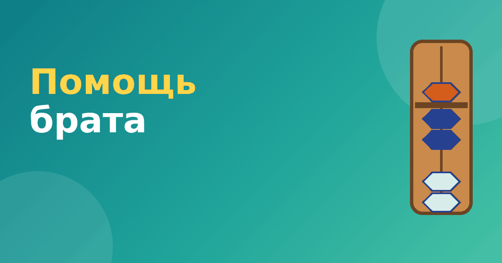

Помощь брата на абакусе: объясняем ребёнку просто

«Помощь брата» — один из двух главных приёмов абакуса, и именно он вызывает больше всего вопросов у родителей. Название кажется странным, но смысл у него простой: когда на стержне не хватает бусин одного типа, на помощь приходит «брат» — число 5, то есть верхняя бусина. Давайте разберём приём на понятных примерах.
Откуда берётся «брат»
Любую цифру от 5 до 9 можно представить как 5 плюс несколько единиц. Например, 7 = 5 + 2, а 9 = 5 + 4. Цифра 5 и цифра меньше пяти связаны между собой: недостающую до пяти часть и называют «братом». Чтобы найти брата числа, нужно вычесть его из 5. Брат числа 1 — число 4, брат числа 2 — число 3, брат числа 3 — число 2, брат числа 4 — число 1.
Прибавляем с помощью брата
Ситуация: на стержне цифра 4 (все нижние бусины прижаты), нужно прибавить 3. Нижних бусин не осталось. Делаем два движения.
- Прижимаем верхнюю бусину: это прибавляет 5.
- Убираем две нижние бусины: 5 − 3 = 2 нижних надо убрать.
Получаем: 4 + 5 − 2 = 7. Проверка: 4 + 3 = 7. Всё верно. Идею можно запомнить так: «Не хватает единиц — беру пятёрку и отдаю лишнее».
Ещё пример: 3 + 4. На стержне три нижние бусины, нужно прибавить 4, а свободна всего одна нижняя. Прибавляем 5 и убираем 1, потому что 5 − 4 = 1. Получаем 3 + 5 − 1 = 7. Проверка: 3 + 4 = 7. Верно.
Вычитаем с помощью брата
Теперь обратная ситуация: на стержне 7, нужно вычесть 4. Нижних бусин всего две, а убрать надо четыре. Делаем так.
- Убираем верхнюю бусину: это минус 5.
- Добавляем одну нижнюю: 5 − 4 = 1.
Получаем: 7 − 5 + 1 = 3. Проверка: 7 − 4 = 3. Всё верно.
Как понять, что нужен именно брат
Спросите себя:
- На стержне цифра меньше 5, и после прибавления должно получиться число от 5 до 9? Тогда нужно прибавлять через верхнюю бусину.
- На стержне цифра 5 или больше, а вычитаемое больше нижних бусин? Тогда нужно убирать верхнюю и возвращать недостающие.
Если ответ «да» на один из вопросов, значит, нужен брат. Если нет, достаточно простого сложения, о котором мы писали в статье сложение на абакусе.
Как объяснить ребёнку
Для детей хорошо работает образ с яблоками и пятёрками. Скажите: «У нас четыре яблочка на полке, и хочется добавить ещё три, но полка вмещает только четыре. Тогда ставим большую корзину на пять яблок и достаём из неё ровно столько, чтобы сошлось». Конечно, образ приблизительный, но он помогает понять логику: пятёрка берётся с запасом, а лишнее возвращается.
Ещё один способ — карточки с парами «число и брат»: 1 и 4, 2 и 3. Играйте: взрослый называет число, ребёнок называет брата. Через несколько дней приём становится автоматическим.
Зачем нужна помощь брата на абакусе
Можно спросить: почему бы не придумать более простое правило? Дело в том, что на соробане у каждого стержня всего пять бусин, и это ограничение — ключ к скорости. Помощь брата на абакусе позволяет выполнить действие двумя движениями вместо нескольких. Кроме того, когда ребёнок переходит к мысленному счёту, ему проще «видеть» два движения, чем пять. Поэтому приём стоит довести до автоматизма, прежде чем идти дальше.
Ещё одна польза — понимание состава числа. Тот, кто уверенно знает, что 4 и 1 дают 5, а 3 и 2 тоже дают 5, быстрее справляется и с задачами в школе. Тренировать состав числа до 5 можно ещё до абакуса, поиграв с пальцами или предметами. Вечером перед сном повторите пары «число и брат» вслух: это занимает минуту.
Частые вопросы
Нужно ли запоминать пары «число и брат» наизусть?
Желательно. Пар всего четыре: 1 и 4, 2 и 3. Через несколько дней игры они запоминаются сами.
Что делать, если ребёнок путает, когда нужен брат, а когда друг?
Вернитесь к простому правилу: сумма до 9 включительно, но бусин не хватает, значит, брат. Сумма 10 и больше, значит, друг.
Упражнения
Попробуйте решить на абакусе:
- 2 + 4 = 6 (прибавляем 5, убираем 1).
- 4 + 2 = 6 (прибавляем 5, убираем 3).
- 8 − 4 = 4 (убираем 5, добавляем 1).
- 9 − 3 = 6 (убираем 3 нижние, остаётся верхняя и одна нижняя, ничего не нужно, это простое вычитание).
Последний пример нарочно простой: он показывает, что брат нужен не всегда. Это важное наблюдение.
Приёмы можно отрабатывать в модулях тренажёра «Ментальная арифметика» на сложение и вычитание с братом. Когда приём освоен, переходите к следующему: помощь друга на абакусе.